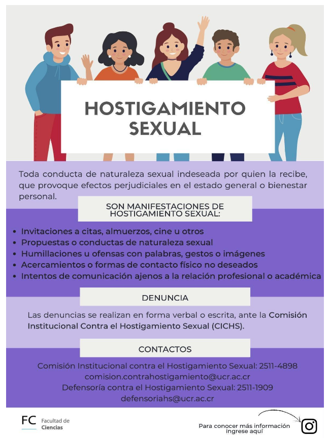
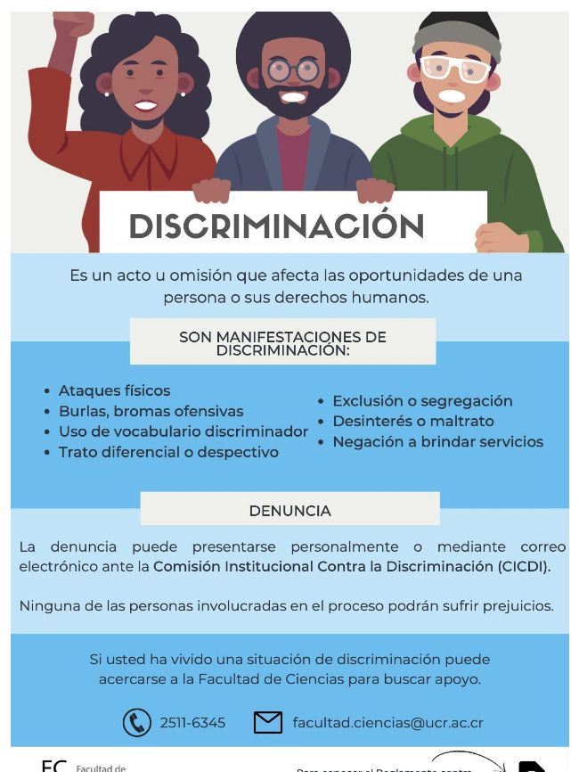

B0305 - LABORATORIO DE ECOLOGÍA GENERAL
📑 Laboratorio de Ecología General - 2025
Selecciona Año/Periodo Académico:
Introducción
La ecología es una ciencia integradora que abarca una amplia gama de ramas de la biología. Originalmente definida por Ernest Haeckel (1834–1919) como el estudio de las interacciones entre los organismos y su ambiente, en la actualidad esta definición se ha ampliado para incluir el análisis de cómo dichas interacciones afectan la distribución y abundancia de las especies, así como el funcionamiento de los ecosistemas (Andrewartha 1970).
Esta definición implica el estudio de una gran variedad de procesos. El ambiente de un organismo incluye desde las características físicas del entorno y la presencia de otros seres vivos, hasta el entorno celular y genético en el que se desarrollan sus funciones vitales. Las interacciones, entendidas como el intercambio de materia y energía, tienen lugar a través de múltiples escalas: entre organismos, entre organismos y su entorno (dentro de ecosistemas), e incluso entre distintos ecosistemas. A su vez, los ecosistemas pueden definirse de diversas escalas según el enfoque del estudio, abarcando desde el microbioma intestinal de un animal hasta el planeta entero considerado como un sistema ecológico.
La ecología permite estudiar a los organismos a nivel individual, poblacional y comunitario, así como su relación con el ambiente y su función dentro del ecosistema. Por lo tanto, su enfoque es multidisciplinario y jerárquico.
La práctica ecológica se basa en la aplicación del método científico hipotético-deductivo. Este método incluye la observación de patrones en la naturaleza, la formulación de hipótesis que los expliquen, el desarrollo de predicciones derivadas de esas hipótesis, y el diseño de experimentos que permitan evaluarlas mediante el análisis de datos. Si los resultados concuerdan con las predicciones, se considera que existe evidencia suficiente para no rechazar la hipótesis. En ciencia, sin embargo, una hipótesis es siempre una explicación tentativa y nunca definitiva; permanece sujeta a evaluación constante, nuevas pruebas y revisión frente a la evidencia disponible. El avance científico se da a través de la formulación de nuevos paradigmas, es decir, marcos teóricos compuestos por hipótesis que han resistido la prueba empírica y que eventualmente son reemplazados por otros más generales, capaces de explicar una mayor diversidad de fenómenos con un mayor respaldo empírico.
En este curso, las personas estudiantes desarrollarán la capacidad de diseñar experimentos para poner a prueba hipótesis. Asimismo, deberán adquirir destrezas en el uso de equipo científico, la recolección de datos en campo y laboratorio, y el manejo de técnicas estadísticas apropiadas para analizar esos datos, extraer conclusiones lógicas y comunicar sus resultados a diferentes audiencias. Como en toda ciencia, la ecología avanza a través de la divulgación de sus hallazgos; por tanto, parte esencial del aprendizaje será adquirir las habilidades necesarias para presentar resultados y explicaciones mediante reportes y exposiciones orales.
Descripción y objetivos del curso
El Laboratorio de Ecología General complementa el curso de teoría con prácticas en el campo y el laboratorio. Al finalizar el curso de laboratorio de Ecología General se espera que la persona estudiante sea capaz de:
Objetivo general
Desarrollar habilidades para plantear, diseñar y ejecutar investigaciones de campo y laboratorio en ecología tropical, aplicando los conceptos teóricos aprendidos en el curso y enfocándose en la prueba de hipótesis mediante el método científico.
Objetivos específicos
- Aprender a formular hipótesis biológicas y predicciones a partir de patrones observados en la naturaleza o en la literatura científica.
- Desarrollar investigaciones en campo y laboratorio utilizando el diseño experimental y poniendo a prueba hipótesis ecológicas.
- Aplicar herramientas estadísticas básicas y redactar informes científicos que comuniquen claramente los resultados obtenidos.
Conocimientos
- Componentes básicos de un diseño experimental.
- Aplicar pruebas estadísticas básicas.
- Generar hipótesis y predicciones claras.
- Conocer los principios de operación de equipo básico de investigación ecológica.
- Ser capaces de escribir artículos científicos.
- Buscar, comprender, analizar y citar correctamente la literatura científica.
Habilidades
- Desarrollar la capacidad de observación científica en contextos naturales.
- Formular hipótesis biológicas y predicciones con base en patrones observados en la naturaleza o descritos en la literatura científica.
- Plantear, diseñar y ejecutar investigaciones de campo y laboratorio para poner a prueba hipótesis ecológicas.
- Utilizar equipo básico de investigación en ecología tropical.
- Aplicar técnicas básicas de muestreo ecológico, como el uso de cuadrantes, transectos y estrategias de muestreo aleatorio o sistemático.
- Realizar análisis estadísticos apropiados para interpretar datos ecológicos.
- Analizar e interpretar resultados científicos para generar nuevo conocimiento.
- Redactar reportes científicos de manera clara y estructurada.
- Comunicar resultados de investigación mediante presentaciones orales.
- Localizar, seleccionar, analizar y citar literatura científica relevante.
Aptitudes
- Trabajar en equipo y colaborar de manera efectiva en proyectos de investigación.
- Comprender y aplicar principios de ética científica, incluyendo el reconocimiento y prevención del plagio, así como el uso ético de herramientas de IA.
- Actuar con responsabilidad ética en la recolección, manejo y análisis de datos.
- Mostrar compromiso y dedicación para alcanzar objetivos y completar las fases del trabajo de campo.
- Fomentar la curiosidad científica como motor del aprendizaje y la investigación.
- Evaluar riesgos y aplicar medidas de seguridad durante las actividades de campo.
Metodología
Durante el curso se harán 4 prácticas de laboratorio, dos de ellas en el campus UCR y dos durante las dos giras. Se hará un trabajo práctico de investigación en parejas a lo largo de todo el semestre. Además, se deberá explicar los objetivos y mecánica de una prueba estadística durante una sesión de laboratorio. Todas las actividades del curso son de asistencia obligatoria. Solo se pueden justificar dos ausencias a clases, prácticas o giras en conjunto, siguiendo los criterios del Artículo 24 del Reglamento del Régimen Académico Estudiantil, si se falta una tercera vez se pierde el curso.
Prácticas de laboratorio del curso
La teoría y las técnicas o herramientas de análisis para cada práctica se exponen en el aula y se les facilita a las personas estudiantes material escrito para repaso. Algunas prácticas podrán ser establecidas por las personas docentes mientras que otras se plantearán en conjunto entre las personas estudiantes, los docentes y los asistentes académicos del curso. Los datos se recolectan en la(s) siguiente(s) semana(s) y luego se analizan, según sea el caso. Para cada práctica las personas estudiantes cuentan con una guía y una lectura de referencia que deben estudiar antes de la ejecución de la práctica.
En cada práctica las personas estudiantes deben participar en el planeamiento, la colecta y el análisis de datos, así como en la elaboración de un reporte científico. Si él o la estudiante se ausenta de algún laboratorio sin la debida justificación, no podrá presentar el reporte de la práctica correspondiente. Para cada práctica las personas estudiantes deben hacer un reporte de acuerdo con el formato solicitado en el curso y deberán de subirlo al entorno del curso en Mediación Virtual, al inicio de la clase en la fecha de entrega según el cronograma; la puntualidad en la entrega de los reportes es estricta, no se aceptan reportes después de la fecha establecida. Para el primer reporte la persona estudiante obtendrá una calificación preliminar, y deberá corregirlo y presentarlo de nuevo. El puntaje que reciba en la segunda revisión corresponderá a la calificación final de la primera práctica. En la sección de evaluación viene el desglose de la calificación de cada informe (son cuatro informes en pareja o grupales según corresponda, más el informe del proyecto semestral que se elabora a lo largo del semestre)
Prácticas grupales en las giras
El curso tiene además dos giras (una de un día, la otra de 2 noches 3 días) en las que se realizan prácticas grupales. En la primera gira (Bosque Municipal de Atenas) los y las estudiantes ayudan a estudiar una pregunta propuesta por una persona docente o asistente. En la segunda gira cada grupo de estudiantes plantea una pregunta para estudiar y lleva a cabo el proceso de investigación; siendo responsables de conseguir los materiales y el equipo necesario para lograr el éxito del proyecto durante la gira. Los datos de la gira se colectan y se escriben en grupo. Además, durante la gira se hará una presentación oral 10 min con los resultados preliminares. A la semana siguiente se realiza la presentación (10 min + 5 min preguntas) de los resultados con el análisis de datos final (consejo: tener 12 diapositivas máximo). Todas las personas estudiantes del grupo serán responsables de la toma de los datos, su procesamiento e interpretación, así como de la elaboración del reporte y presentación oral. Por lo anterior, hay un formulario para establecer el grado de participación, que deben entregar firmado junto al informe (ver sección de Evaluación). En todas las giras y las prácticas se deben respetar y acatar las normas establecidas en el Reglamento Universitario y de las instalaciones donde se realiza la gira (ver infografía al final de este documento). Durante las giras y las prácticas de campo los estudiantes deben seguir las normas de seguridad para trabajo en el campo que se les indique. Las fechas y los destinos de las giras se encuentran en el cronograma.
Trabajo Práctico de Investigación en parejas
Como parte del curso, las personas estudiantes deben realizar un trabajo práctico de investigación en parejas. En este trabajo las y los estudiantes deben poner en práctica todos los pasos del método científico con un problema o pregunta ecológica. No se permitirán trabajos cortos, deben ser de tres o más visitas de campo o incluir un componente de laboratorio de una complejidad razonable, dependiendo de la naturaleza del proyecto. Dentro del primer mes de clases (agosto) los y las estudiantes deben presentar su idea mediante un anteproyecto escrito. El anteproyecto escrito deberá llevar el siguiente formato: título, introducción (incluyendo hipótesis y predicciones), materiales y métodos y bibliografía. En la introducción los estudiantes deberán incluir una breve revisión de la literatura que sirva para justificar las hipótesis que quieren probar y sus predicciones. Los materiales y métodos deberán incluir una descripción del sitio de estudio, del diseño experimental (diseño de muestreo) y de los materiales que usarán para ello, las posibles pruebas estadísticas y un cronograma que incluya las fechas de recolección de datos y análisis de datos.
En los siguientes dos meses (setiembre y octubre) los estudiantes deben llevar a cabo la recolección de datos. Se les solicitará un informe de avance a mitad del mes de octubre. En el último mes (noviembre) deben concluir con la toma de datos y entrar en el análisis de los datos y preparar el reporte y la presentación oral. El documento deberá llevar el formato de reporte científico según el formato que se les entregue en el curso. Los estudiantes deben presentar los resultados en forma oral al final del curso. La presentación de los trabajos orales se realizará según la fecha indicada en el cronograma. Todas las personas estudiantes deberán presentarse a la hora establecida. Para cada trabajo semestral las y los estudiantes tienen un tiempo de 12 min de presentación y 5 min para aclarar preguntas del público.
Evaluación
El curso se aprueba con una nota igual o superior a 7.0. Las personas estudiantes con nota de 6.0 o 6.5 tienen derecho a hacer una prueba de ampliación. Si la nota es menor a 6.0 es insuficiente y no tiene derecho a prueba de ampliación, según el redondeo establecido en el artículo 25 del Reglamento de Régimen Académico Estudiantil. La evaluación del curso se hará de la siguiente forma:
Evaluación global
| Evaluación | Puntaje |
|---|---|
| 2 reportes en pareja de las prácticas de laboratorio* | 20 (10 por reporte) |
| 2 reportes grupales de las prácticas de las giras | 25 (12.5 por reporte) |
| Una presentación de la práctica grupal de la gira de Manú | 10 (5 en Manú, 5 en UCR) |
| 1 presentación oral sobre la aplicación de una prueba estadística | 10 |
| 1 trabajo de investigación en parejas (Reporte y presentación) | 35 |
| Total | 100 |
Reportes de practicas
La evaluación de cada reporte se hará de la siguiente forma:
| Sección | Puntos |
|---|---|
| Título | 5 |
| Resumen | 4 |
| Palabras claves | 1 |
| Introducción | 20 |
| Hipótesis y predicciones | 5 |
| Materiales y métodos | 15 |
| Resultados | 25 |
| Discusión | 25 |
| Referencias | 5 |
| Total | 100 |
Reportes semestrales
El proyecto de investigación en parejas (35% de la nota final) será evaluado de la siguiente forma:
| Sección | Puntos |
|---|---|
| Anteproyecto | 10 |
| Informe de avance | 10 |
| Reporte | 65 |
| Presentación oral | 15 |
| Total | 100 |
El anteproyecto se evaluará de la siguiente manera:
| Sección | Puntos |
|---|---|
| Título | 5 |
| Introducción (incluye marco teórico, justificación, hipótesis y predicciones) | 40 |
| Materiales y métodos (incluye descripción del sitio de estudio, diseño experimental, equipo empleado y cronograma) | 50 |
| Referencias | 5 |
| Total | 100 |
El informe de avance se evaluará de la siguiente manera:
| Ítem | Puntos |
|---|---|
| Parte escrita: - Las secciones del anteproyecto con las correcciones añadidas. - Indicar modificaciones realizadas a la propuesta original. - Resumen de datos preliminares: el número de eventos de muestreo y cantidad de muestras de los datos recolectados hasta el momento. |
55 |
| Cronograma de trabajo faltante: - Explicación de la matriz de datos y de las modificaciones realizadas a la propuesta original y cronograma de trabajo faltante |
45 |
| Total | 100 |
El reporte de la investigación en parejas se evalúa siguiendo el siguiente cuadro de secciones:
| Sección | Puntos |
|---|---|
| Título | 4 |
| Resumen | 5 |
| Palabras claves | 1 |
| Introducción | 25 |
| Materiales y métodos | 10 |
| Resultados | 25 |
| Discusión | 25 |
| Bibliografía | 5 |
| Total | 100 |
Evaluación de colaboración
Para todos los reportes que se realicen de forma grupal y para la investigación en parejas se deberá entregar una evaluación de la colaboración de cada compañera o compañero del grupo, esto se tomará en cuenta para repartir la nota del reporte puesta por la persona docente de acuerdo con dicho criterio, según el siguiente cuadro:
| CONCEPTO | Porcentaje | Estudiante 1 | Estudiante 2 | Estudiante 3 | Estudiante 4 | Estudiante 5 |
|---|---|---|---|---|---|---|
| Planeamiento y diseño del proyecto | ||||||
| Recopilación de datos o información | ||||||
| Análisis e interpretación | ||||||
| Redacción del reporte | ||||||
| Carné de estudiante | ||||||
| Firma de estudiante |
Entrega de evaluaciónes
La persona docente debe entregar al alumnado las evaluaciones calificadas y todo documento o material sujeto a evaluación, a más tardar diez días hábiles después de haberse efectuado las evaluaciones y haber recibido los documentos (Artículo 22 del Reglamento de Régimen Académico Estudiantil). El período razonable para guardar los trabajos y exámenes de los estudiantes posterior a la conclusión del ciclo lectivo es de seis meses, concluido este tiempo se pueden eliminar. Si la persona estudiante no está de acuerdo con la nota asignada en alguno de los rubros calificados, debe comunicarlo a los profesores del curso en un plazo no mayor de tres días hábiles posteriores a la devolución de esta. Los profesores atenderán con cuidado y prontitud la petición, para lo cual tendrá un plazo no mayor a cinco días hábiles (Artículo 22 del Reglamento de Régimen Académico Estudiantil).
Chronograma del curso - 2025
- Semana 1 (15/8): Feriado día de la Madre.
Práctica 1
- Semana 2 (22/8):
- Introducción al curso.
- Organismos y ambiente.
- Definición de la pregunta práctica 1.
- Observación, pregunta e hipótesis.
- Semana 3 (29/8):
- Definición de los métodos.
- Introducción a la escritura de reportes y análisis de datos en ecología.
- Discusión métodos práctica 1.
- Semana 4 (5/9):
- Recolecta de datos.
- 💡Anteproyecto semestral.
- Semana 5 (12/9):
- Análisis de datos.
Práctica 2
- Semana 6 (19/9):
- Poblaciones.
- Definición de la pregunta sobre poblaciones enfocada en Bosque Municipal Atenas.
- Métodos.
- 🕒 Entrega: Reporte 1 versión 1.
- Semana 7 (26/9):
- Métodos/recolecta de datos práctica 2.
- Recolecta de datos Gira 1 Bosque Municipal de Atenas.
- Profes y asistentes entregan Reporte 1 revisado.
- Semana 8 (3/10):
- Análisis de datos poblaciones práctica 1.
- 🕒 Entrega final reporte 1.
Práctica 3
- Semana 9 (10/10):
- Interacciones Depredación.
- Pregunta/Métodos.
- 🕒 Entrega: Reporte 2.
- Semana 10 (17/10):
- Setup de experimento práctica 3.
- Semana 11 (24/10):
- Recolecta de datos.
- 💡 🕒 Entrega: Avance 1 proyecto semestral.
- Semana 12 (31/10):
- Análisis de datos.
Práctica 4
- Semana 13 (7/11):
- Ecosistemas.
- Pregunta grupal Manú.
- 🕒 Entrega: Reporte 3.
- Semana 14 (14/11):
- Métodos/Recolección de datos.
- Gira 2 Manú, 14–16 nov.
- Avance 2 (Datos).
- Semana 15 (21/11):
- Análisis de datos Gira Manú.
- Semana 16 (28/11):
- Presentaciones orales Gira Manú.
- 🕒 Entrega: Reporte 4.
- Semana 17 (5/12):
- 💡Presentaciones orales Proyecto semestral.
- 💡🕒 Entrega: Informe escrito Proyecto semestral.
Bibliografía
Andrewartha, H. G. (1970). Introduction to the study of animal populations (2nd ed.). Chapman and Hall.
Begon, M., Harper, J., & Townsend, C. (2006). Ecology: From individuals to ecosystems (4th ed.). Blackwell.
Betts, M. G., Hadley, A. S., Frey, D. W., Frey, S. J., Gannon, D., Harris, S. H., … & Zárrate‐Charry, D. (2021). When are hypotheses useful in ecology and evolution? Ecology and Evolution, 11(11), 5762–5776. https://doi.org/10.1002/ece3.7472
Crawley, M. J. (2007). The R book. John Wiley.
Farji-Brener, A. G. (2003). Uso correcto, parcial e incorrecto de los términos “hipótesis” y “predicciones” en ecología. Ecología Austral, 13(2), 223–227. 📄 PDF
Farji-Brener, A. G. (2004). ¿Son hipótesis las hipótesis estadísticas? Ecología Austral, 14(2), 201–203. 📄 PDF
Farji-Brener, A. G. (2009). Why are leaf-cutting ants more common in early secondary forests than in old-growth tropical forests? An evaluation of the palatable forage hypothesis. Oikos, 118(4), 532–540. 📄 PDF
Farji-Brener, A. G. (2021). The importance of hypothesis-based thinking in ecology: insights from natural history. Austral Ecology, 46(7), 1043–1047. 📄 PDF
Gotelli, N. J., & Ellison, A. M. (2004). A primer of ecological statistics (Vol. 1). Sinauer Associates. 📄 PDF - Cap. 4 | 📄 PDF - Cap. 6
Krebs, C. J. (1999). Ecological methodology (2nd ed.). Benjamin Cummings. http://www.zoology.ubc.ca/~krebs/books.html
Mittelbach, G. G., & McGill, B. J. (2019). Community ecology. Oxford University Press.
Moreno, C. E. (2001). Manual de métodos para medir la biodiversidad. Universidad Veracruzana. https://www.researchgate.net/publication/304346666_Metodos_para_medir_la_biodiversidad
Quinn, G. P., & Keough, M. J. (2002). Experimental design and data analysis for biologists. Cambridge University Press.
Schimel, J. (2012). Writing science: How to write papers that get cited and proposals that get funded. Oxford University Press.
Sutherland, W. J. (Ed.). (2006). Ecological census techniques: A handbook. Cambridge University Press. https://www.researchgate.net/publication/273070581_Ecological_Census_Techniques_A_Handbook
Zar, J. H. (1999). Biostatistical analysis (4th ed.). Prentice Hall.
Hostigamiento sexual

Discriminacion
